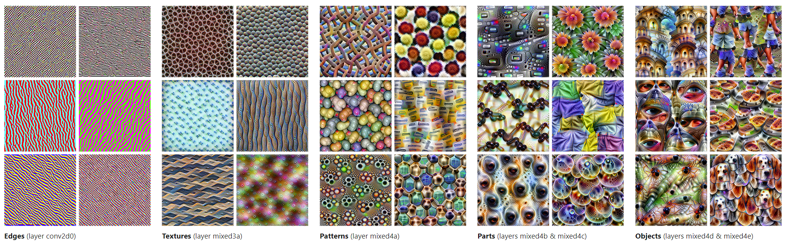
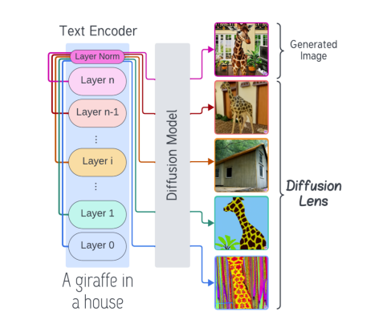
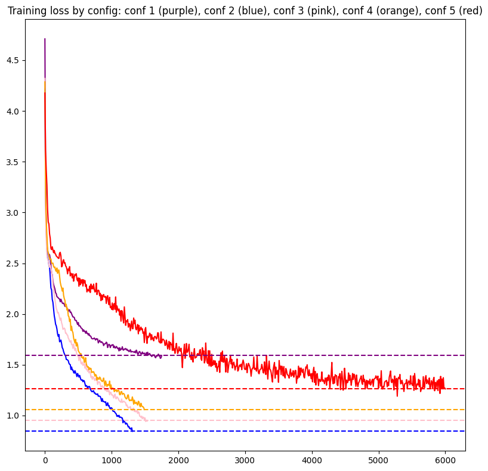
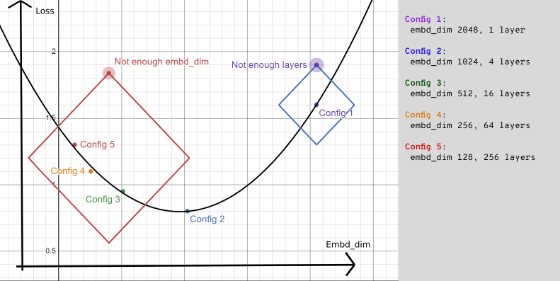

This post details my experiments on whether Transformers with more thin layers are better than Transformers with fewer wide layers. I tested 5 different configurations to conclude that an optimal ratio between is the best config, and in my experiments, 4 layers with an embd_dim of 1024 worked the best.
I'm basing the layer width off of Wide Attention is the way forward for Transformers, which widens the layer through the FFN width, which is part of the MLP. I'm using @karpathy's NanoGPT, where the MLPs are defined 2 linear layers with a GeLU activation in the middle, both input/output layers have \(4*embd^2\) parameters, So widening or thinning out a layer has extra effects, and that extra effect is the curse of dimensionality, or how changing the embd_dim values changes the sizes of the input and intermediate vectors, which changes how much a model can learn, but I don't think that this is a big issue, considering that tiny shakespeare is a small dataset and all my vectors are at least at a value over 100, the model can superposition the data just fine.
I had one error that resulted in me having to use a different n_head value, the sm_80 != sm_90, which fixes for transformers when the number of heads is a power of 2, and 2 heads decided to not work for the last two configs, but 4 heads did.
The code is available at this github repo, and I used this Kaggle nb to run experiments.
More Layers is better comes from the evidence that with more layers, you can have deeper representations. Popular examples include Anthropic's visualizing features, or the Diffusion lens paper.


Some examples of the more layers = more sophisticated representation argument
Many took that to mean picking layers over layer width in most cases, but I don't think that would work at all. The more layers only work because there's more MLPs there.
Trading the parameters of big MLPs in wide layers for extra smaller MLPs in more layers would have a detrimental effect at some point, and these experiments give out an idea of where.
All the models are vanilla transformers trained from scratch, each config is parameter equivalent (50M parameters), and each run is terminated if overfitting [1]
Here's the loss graph with each config's losses and final loss:

Here's the configs themselves, every term is in the \(2^x\) format [2]:
| Config | n_head |
n_layer |
embd_dim |
Final Train loss | Final Val loss [3] |
|---|---|---|---|---|---|
| 1 (Purple) | 2 | 1 | 2048 | 1.59 | 1.673 |
| 2 (Blue) | 2 | 4 | 1024 | 0.84 | 0.953 |
| 3 (Pink) | 2 | 16 | 512 | 0.95 | 1.103 |
| 4 (Orange) | 4 | 64 | 256 | 1.06 | 1.245 |
| 5 (Red) | 4 | 256 | 128 | 1.37 | 1.467 |
We can mathematically resent the relation between embd and layers as
\(\text{embd}^2 \propto \frac{1}{\text{n\_layers}}\)
So every halving of the embd_dim is a 4x increase for n_layers
Another way to represent the configs is this:

Comparing embd_dim vs loss, you see that the best spot is the balanced config, with a couple of layers and a medium sized embd_dim
A good example of Config 2 at scale is probably Llama 3 8b, which has an embd_dim 4096 and a vocab_size 128k, with 32 layers.
The embd_dim is high enough to learn lots of the 15 trillion tokens of data it was fed, while 32 layers is enough to make some good internal representations of that data.
Llama 3 70b is the even better version, with 80 layers to make representations with, this model is the one really making use of the 15 trillion tokens.
If Meta ever releases L3 400B, that would be interesting in terms of probably having 100+ layers, wonder if it has too many layers for its embedding dimensions.
Here's some other data per config:
| Config | Initial loss | time/step | MFU |
|---|---|---|---|
| 1 | 4.7 | 600ms | 255%[4] |
| 2 | 4.2 | 1000ms | 10% |
| 3 | 4.4 | 700ms | 9% |
| 4 | 4.3 | 750ms | 7% |
| 5 | 4.17 | 3000ms | 2.5% |
Extra layers have some effect on decreasing the initial loss, but it’s not worth it in comparison to the extra amount of time for initialization per extra layer. Config 1 finished compiling in a minute, but Config 5 took half an hour, and the MFU is ruined with that many layers.
I expected the 4 attention heads to help with loss, but they had a mediocre comparative loss against the 2 head models.
My experiments show that finding a balance in Transformer models, with a moderate number of layers and an intermediate embedding dimension, works best. Testing five different setups, each with 50 million parameters, revealed that a model with four layers and an embedding dimension of 1024 (Config 2) had the lowest final validation loss. While deeper models can give more detailed feature representations, adding too many layers, as seen in Configs 4 and 5, leads to diminishing returns and higher computational costs without much improvement. The results highlight the need to strike a good balance between layer depth and width for better efficiency and performance.
I'd personally find the results for SSMs like RWKV/Mamba interesting, considering their "state space representations"
@misc{brown2022wideattentionwayforward,
title={Wide Attention Is The Way Forward For Transformers?},
author={Jason Ross Brown and Yiren Zhao and Ilia Shumailov and Robert D Mullins},
year={2022},
eprint={2210.00640},
archivePrefix={arXiv},
primaryClass={cs.LG}
url={https://arxiv.org/abs/2210.00640},
}
@article{olah2017feature,
author = {Olah, Chris and Mordvintsev, Alexander and Schubert, Ludwig},
title = {Feature Visualization},
journal = {Distill},
year = {2017},
note = {https://distill.pub/2017/feature-visualization},
doi = {10.23915/distill.00007}
}
@misc{toker2024diffusionlensinterpretingtext,
title={Diffusion Lens: Interpreting Text Encoders in Text-to-Image Pipelines},
author={Michael Toker and Hadas Orgad and Mor Ventura and Dana Arad and Yonatan Belinkov},
year={2024},
eprint={2403.05846},
archivePrefix={arXiv},
primaryClass={cs.CV}
url={https://arxiv.org/abs/2403.05846},
}
1. overfitting is determined by checking the Val loss over 750 steps, if its increasing or remaining the same over time while train loss drops, its considered overfit and terminated
2. Everything is a power of 2, for both NN training speed, and during tensor initialization everything is divisible.
3. Val loss was evaluated every 250 steps, and tends to remain a decent amount higher than train loss the whole time (\(\approx 0.1-0.2)\), but that’s most likely due to the Val loss taking up specific parts shakespeare plays during shuffles, a small dataset issue.
4. I genuinely have no idea what happened here, but I was using the 65 TFLOP fp16 value on a T4 gpu, and this is what I got.